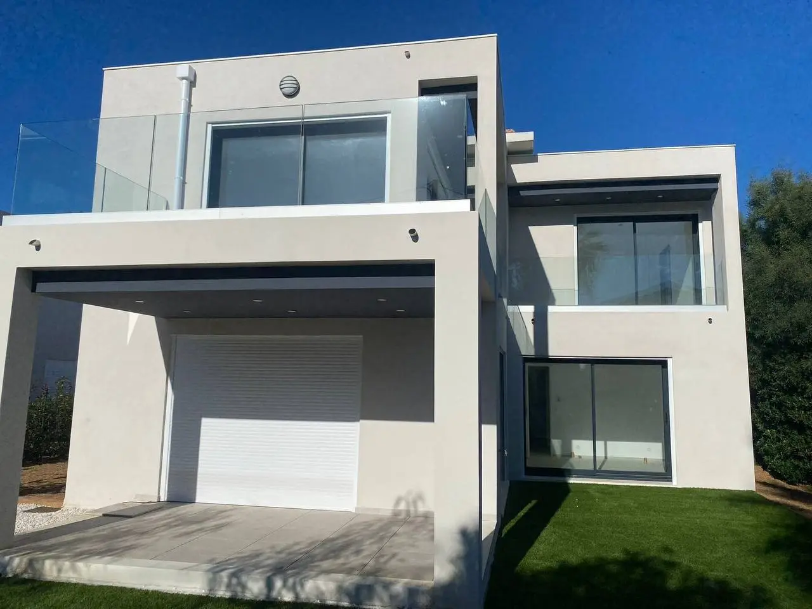

4,9/5
« Deux fenêtres changées en une matinée, travail soigné et très bon conseil. »

Menuiseries sur-mesure posées avec un vrai savoir-faire, pour les particuliers comme les professionnels. Un seul interlocuteur et un devis gratuit sous 48 h.
« Deux fenêtres changées en une matinée, travail soigné et très bon conseil. »

« José a posé mes volets roulants proprement, ponctuel et de bon conseil. Rien à redire. »

« Garde-corps en verre posé sur ma terrasse, finitions impeccables et chantier laissé propre. »
Menuiseries sur-mesure, posées proprement et avec soin. Vous avez un seul interlocuteur, du premier rendez-vous aux finitions.
 FenêtresVolets roulants
FenêtresVolets roulants Stores bannes
Stores bannes Portes d'entréeGarde-corps verre
Portes d'entréeGarde-corps verre Baies & vérandas
Baies & vérandas Climatisation
ClimatisationDouble vitrage sur-mesure, isolation thermique et phonique. Dépose et pose comprises.
Demander un devisQuelques chantiers de menuiserie réalisés à Marseille et dans les environs. Cliquez sur une photo pour l'agrandir.


Quatre étapes, un seul interlocuteur, et un devis détaillé que vous validez avant le moindre travaux.
Vous me décrivez votre projet par téléphone ou via le formulaire. On échange sur vos besoins.
Je prends les mesures, j'évalue le chantier et je vous remets un devis clair sous 48 h.
Intervention propre, dans les délais annoncés, chantier laissé net en fin de journée.
Je reste joignable après la pose et je repasse régler le moindre détail jusqu'à ce que tout soit parfaitement réglé.
Un artisan menuisier local qui s'engage sur la qualité, la propreté et la clarté, du premier contact jusqu'aux finitions.
Du premier appel à la pose, vous parlez toujours à la même personne. Sans intermédiaire.
Une solution adaptée à votre logement et à votre budget, jamais du superflu.
Mesures précises, pose dans les règles et le souci du détail à chaque étape.
Détaillé et validé avant le moindre travaux. Prix annoncé, prix tenu.
Réponse sous 48 h et chantier organisé, dans les délais convenus. À Marseille et jusqu'à 100 km.
Intérieur protégé pendant les travaux et laissé net en fin de journée.

« Travail propre et rapide, deux fenêtres changées en une matinée. Très bon conseil, je recommande sans hésiter. »

« José a posé mes nouvelles fenêtres proprement, ponctuel et de bon conseil sur le modèle. Prix correct, rien à redire. »
« Très professionnel pour mes volets roulants solaires. Finitions impeccables et chantier laissé propre. »
« Garde-corps en verre posé sur ma terrasse, le rendu est superbe et la vue est totalement dégagée. Du bel ouvrage. »
« Store banne et porte d'entrée changés, accueil au top et délais respectés. On refera appel à lui sans hésiter. »
« José a installé ma climatisation réversible rapidement et proprement. Très bon conseil sur le matériel adapté à mes pièces. »

« Aménagement intérieur sur-mesure réalisé avec beaucoup de soin. Bon contact, devis clair et travail de qualité. »

« Intervention rapide pour notre commerce, devanture changée sans perturber l'activité. Très professionnel et soigné. »
« Devis clair et sans surprise, prix tenu. Une porte d'entrée posée parfaitement, finitions soignées. Je recommande. »
« Pose de mes fenêtres alu impeccable, du conseil au montage. Chantier laissé propre et délais tenus. »
« Remplacement de plusieurs volets roulants. Travail soigné, finitions au top et artisan ponctuel. »
J'interviens sur Marseille, Gémenos, Aubagne, La Ciotat, Cassis et les communes alentour.
Merci, je vous recontacte très vite pour établir votre devis gratuit.
Oui, le déplacement, la prise de mesures et le devis sont entièrement gratuits et sans engagement. Vous décidez ensuite en toute liberté.
Je vous remets un devis sous 48 h. Le délai de pose dépend du chantier et des fournitures, on le fixe ensemble dès la validation du devis.
Oui, chaque menuiserie est prise sur mesure après visite et relevé précis des dimensions. Fenêtres, portes, volets ou garde-corps sont adaptés à votre logement, jamais du standard imposé.
Les menuiseries que je pose sont couvertes par les garanties de leurs fabricants. De mon côté, je m'engage à revenir régler le moindre détail après la pose jusqu'à ce que tout soit parfaitement réglé.
J'interviens sur Marseille, Gémenos, Aubagne, La Ciotat et les communes alentour. En cas de doute, appelez-moi, on vérifie ensemble.
Un acompte est demandé à la commande pour lancer la fabrication. Le solde se règle une fois le chantier terminé et validé par vos soins, jamais avant.
Je travaille avec des fournisseurs reconnus et des menuiseries de qualité reconnue. Je vous présente les options, les labels et les performances avant toute commande.
On ne se quitte pas tant que tout n'est pas parfaitement réglé. Je repasse régler le moindre détail, et vous restez couvert par les garanties des fabricants.
Oui. J'interviens chez les particuliers comme pour les commerces, bureaux, copropriétés et professionnels du bâtiment.